REVUE MÉTHODE
http://revuemethode.org
Merci pour votre message !
par Olivier MENUT
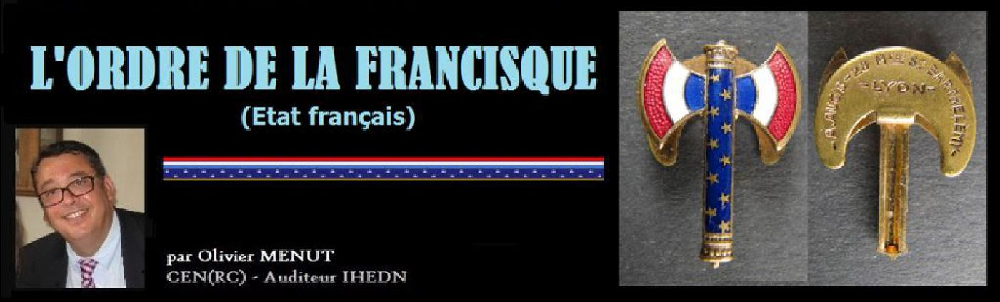
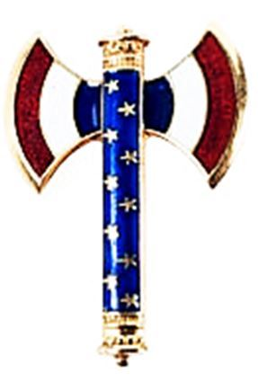
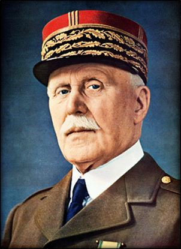
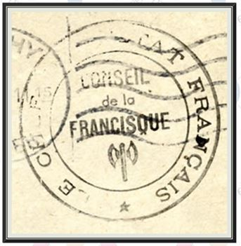
« La Francisque du Maréchal : Voilà donc la francisque des Francs promue au rang de symbole national et introduite à ce titre dans les armes du nouvel État français. Il y a, en archéologie, une question de la francisque. Était-elle une hache à un seul tranchant et s’emmanchant verticalement par une douille à manche droit, comme les haches ordinaires, ou était-elle une double hache, telle qu’elle vient d’être brodée sur le fanion du Maréchal et gravée sur les nouvelles pièces de monnaie ? Aucune découverte archéologique n’a confirmé la thèse de la double hache. Celle-ci n’a pour elle qu’un bas-relief de la colonne Antonine, représentant des trophées pris aux barbares. Est-ce avec une hache à simple ou à double tranchant qu’à Soissons un soldat de l’armée de Clovis brisa le vase choisi par son chef ?
Est-ce avec une hache à simple ou à double tranchant que, l’année suivante, le roi des Francs se vengea en fendant la tête du soldat qui avait osé contrecarrer son désir ? Toute l’imagerie traditionnelle ayant opté pour la double hache, il n’y a qu’à s’incliner. En tout cas, la francisque était une arme de guerre, alors que la hache du licteur, avec laquelle on est prié de ne pas la confondre, était, sous la république et l’empire romain, l’instrument de la peine capitale et portée devant les consuls comme symbole de leur autorité. Encore les consuls n’avaient-ils le droit de se faire précéder de la hache que hors de Rome, à la tête des armées. Plus tard, elle fut réservée au dictateur. La francisque des francs n’a jamais signifié rien de semblable. Elle était l’arme du troupier dont il se servait principalement pour crever le bouclier de l’adversaire - T. des T. »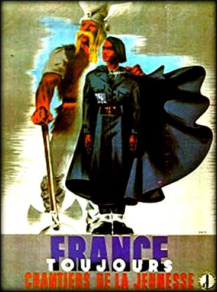
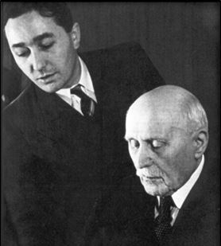
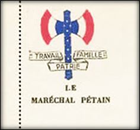
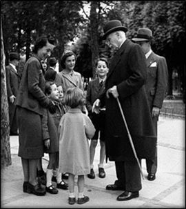
« C’est ainsi que le rapprochement de deux périodes de notre histoire devait m’amener sur la voie. Après 19 siècles, l’arme à deux tranchants que portaient les Gaulois et leur chef Vercingétorix à l’époque de la première grande épreuve nationale, d’où devait sortir notre pays, retint dès lors ma pensée. Elle allait m’aider à préfigurer dans ses grandes lignes le signe nouveau de ralliement autour du Maréchal Pétain, chef d’une France plongée dans la souffrance et le deuil ».
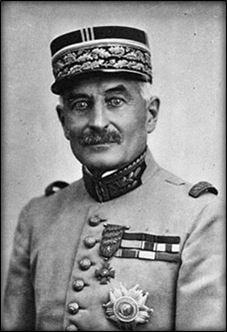
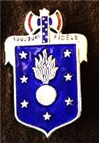
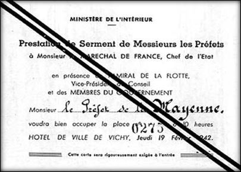
« Je fais don de ma personne au Maréchal Pétain comme il a fait don de la sienne à la France. Je m'engage à servir ses disciplines et à rester fidèle à sa personne et à son œuvre ».
« Je jure d’être fidèle à l’Empereur et à sa dynastie. Je promets sur mon honneur de me dévouer à son service, à la défense de sa personne et à la conservation du territoire de l’Empire dans son intégrité, de n’assister à aucun conseil ou réunion contraire à la tranquillité de l’État ; de prévenir Sa Majesté de tout ce qui se tramerait, à ma connaissance, contre son honneur, sa sûreté ou le bien de l’Empire.»
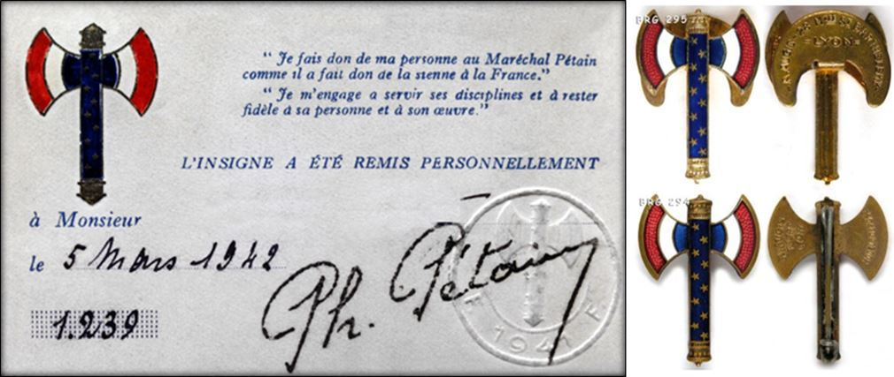
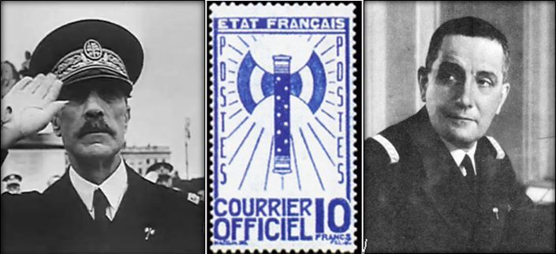
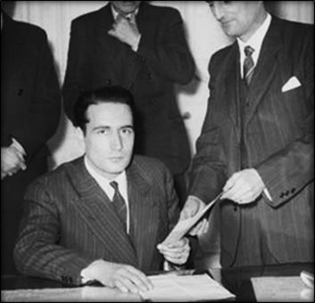
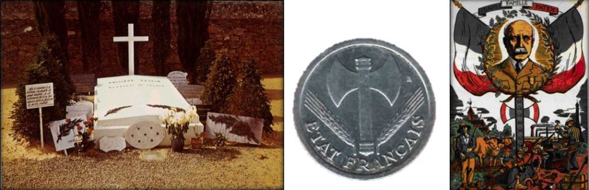
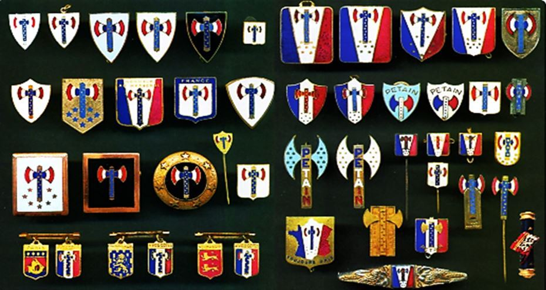
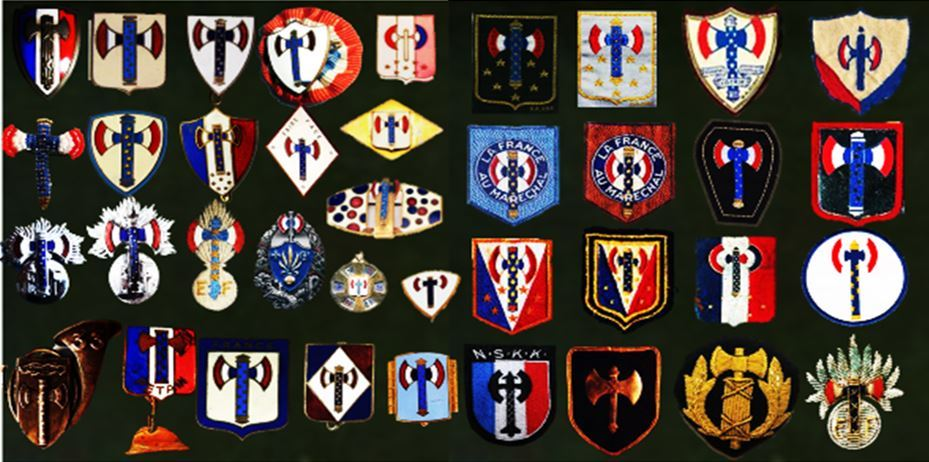
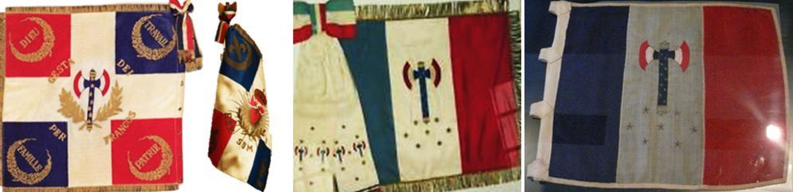
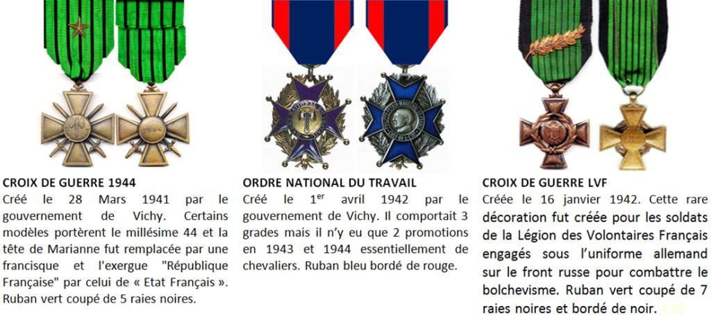
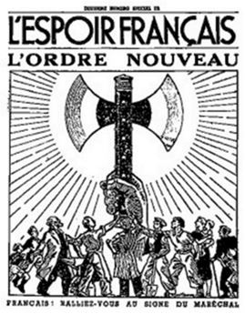
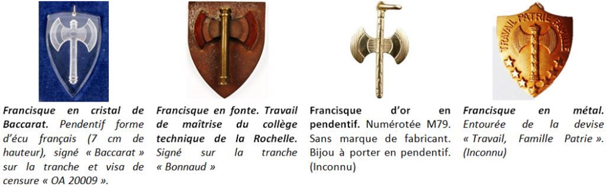
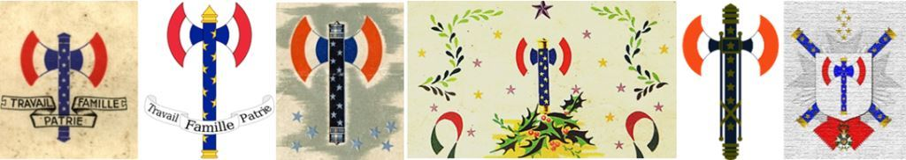
REVUE MÉTHODE
http://revuemethode.org
Partager cette page